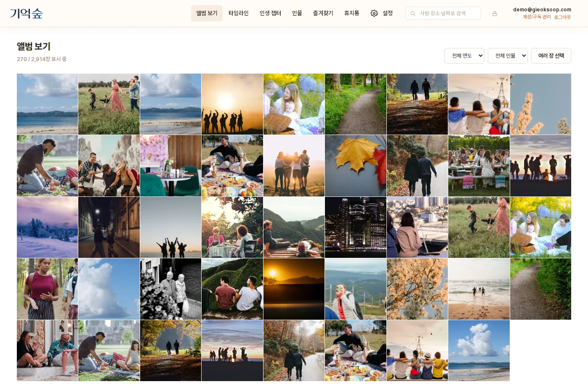
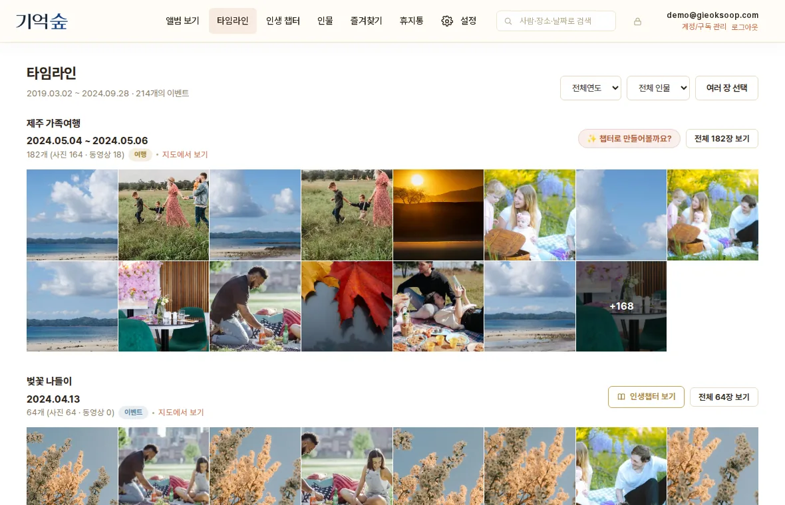
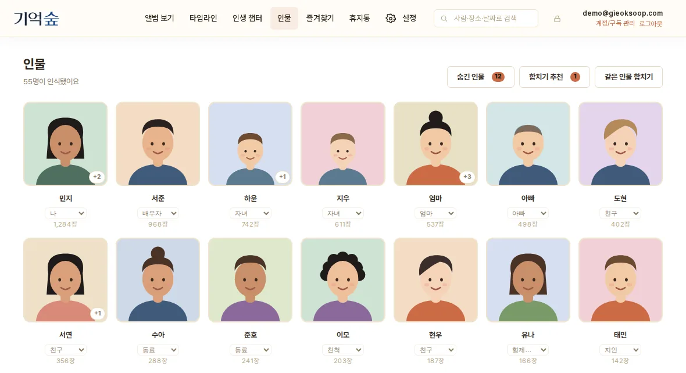
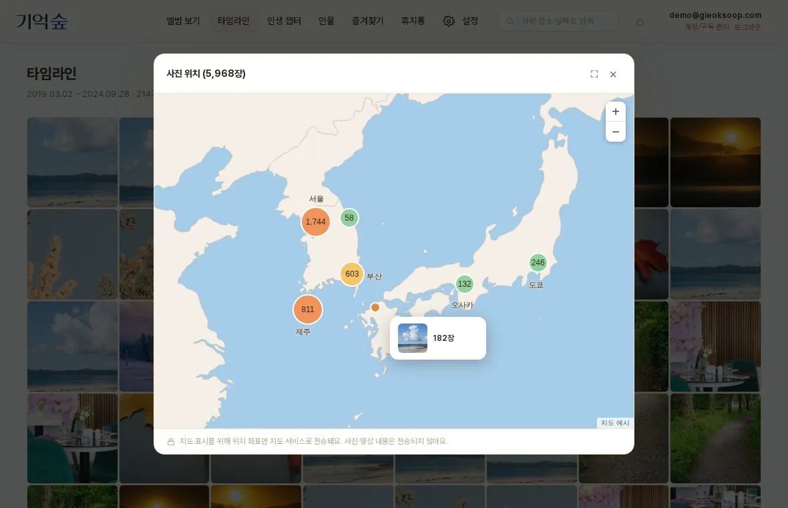
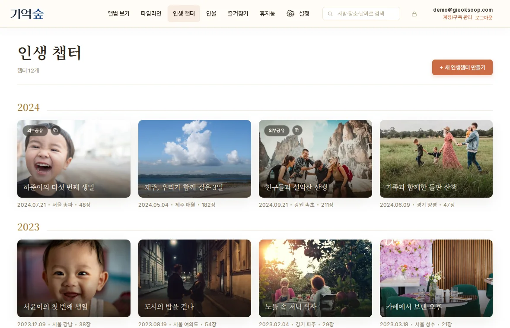
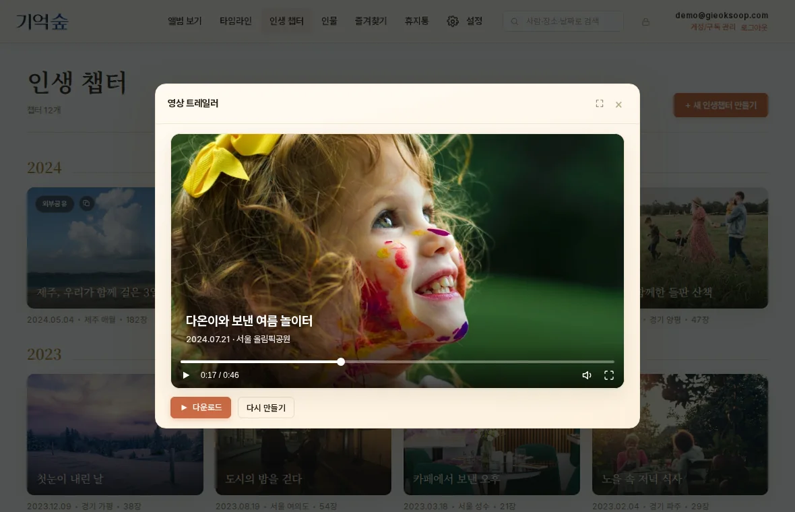

폴더만 연결하면, 기억숲이 시간·장소·사람으로 사진을 이어서
내 인생의 타임라인으로 만들어드려요.
정리하지 않아도 괜찮아요.
오래 담아둔 사진이, 다시 꺼내볼 수 있는 기억이 돼요.
PC 앱을 준비하고 있어요. 가입해 두시면 출시 소식을 가장 먼저 알려드려요.

화면은 이해를 돕기 위한 예시입니다.
사진은 계속 쌓이는데, 정리는 늘 다음으로 미뤄집니다.
기억숲은 정리하라고 하지 않아요.
연결만 하세요. 정리는 기억숲이 합니다.
사진을 옮기거나 이름을 바꾸거나 업로드할 필요가 없어요.
컴퓨터의 사진 폴더나 외장하드를 고르면 끝. 폰에 있는 사진은 QR 코드를 스캔해서 바로 보낼 수 있어요.
촬영 시간·장소·함께 있던 사람을 읽어서, 흩어진 사진을 하나의 사건(이벤트)으로 묶어줘요.
타임라인, 인물, 지도로 내 지난 시간을 훑어보고, 마음에 남은 순간은 인생 챕터로 간직해요.
사진을 보관하는 데서 끝나지 않고, 기억으로 다시 꺼내볼 수 있게 도와드려요.
수천 장의 사진이 "그날의 이야기" 단위로 정리돼요. 폴더를 뒤질 필요 없이, 시간을 따라 내려가며 다시 만나보세요.
이름 붙이기도, 폴더 옮기기도 필요 없어요.

얼굴을 알아보고 사람별로 모아줘요. 아이가 자라온 시간, 오래된 친구와의 추억을 연도별로 따라가 보세요.
잘못 묶인 사람은 직접 합치고 나눌 수 있어요.

어디서 찍었는지가 지도에 표시돼요. 그 달의 발자취도, 인생 전체의 발자취도 한 장의 지도로 볼 수 있어요.

마음에 남은 순간은 인생 챕터로 만들어요. 사진과 함께 그날의 이야기를 적어두면, 시간이 지나도 다시 꺼내볼 수 있어요. 무엇을 쓸지 막막할 땐 초안을 도와드려요.
가족과 친구에게는 내가 고른 챕터만 링크로 보여줄 수 있어요.

사진과 영상이 배경음악과 함께 한 편의 이야기가 돼요. 날짜와 장소 자막, 그날의 현장음까지 담겨서 보는 순간 그때로 돌아가요.
잔잔하게, 경쾌하게 — 분위기도 고를 수 있어요.

그 밖에도
다른 서비스가 사진을 맡아두는 곳이라면, 기억숲은 사진을 기억으로 되돌려주는 곳이에요.
폴더를 연결하는 것만으로 정리가 끝나요. 사진을 하나하나 분류하는 수고 없이, 미뤄두던 사진을 바로 열어볼 수 있어요.
원본을 옮기거나 올리지 않아요. 사진을 클라우드에 맡기는 대신, 내 손에 두고 안전하게 이어보세요.
목록으로 끝나지 않고, 이야기가 담긴 챕터와 한 편의 영상으로 남아서 가족에게 건네줄 수 있어요.
사진 원본은 당신의 컴퓨터를 떠나지 않아요. 기억숲이 사라져도 당신의 사진에는 아무 일도 생기지 않습니다.
시작하기 전에 궁금하실 만한 것들이에요.
클라우드 앨범은 사진을 서비스에 올려서 맡아두는 곳이에요. 기억숲은 사진을 올리지 않고, 내 컴퓨터에 있는 그대로 시간·장소·사람으로 이어서 타임라인과 인생 챕터, 영상으로 만들어줘요. 쓰고 계신 클라우드 앨범은 그대로 쓰셔도 돼요.
아니요. 사진과 영상 원본은 내 컴퓨터에 그대로 있고, 정리도 내 컴퓨터에서 이뤄져요. 가족·친구에게 보여주려고 직접 공유를 선택한 챕터만 예외예요.
앱에 나오는 QR 코드를 폰으로 스캔하면, 같은 와이파이 안에서 바로 사진을 보낼 수 있어요. 폰에 따로 앱을 설치하지 않아도 돼요.
그럴 필요 없어요. 폴더가 어지럽게 섞여 있어도, 촬영 시간과 장소를 읽어서 기억숲이 알아서 묶어줘요. 원본 파일은 옮기거나 바꾸지 않아요.
외장하드가 연결돼 있을 때 사진을 볼 수 있어요. 오래 간직하고 싶은 챕터는 '영구 보존'으로 컴퓨터에 따로 남겨둘 수 있어서, 외장하드가 없어도 계속 볼 수 있어요.
원본 사진은 처음 그대로 남아 있어요. 기억숲에서 정리한 내용은 언제든 파일로 내보낼 수 있어요.